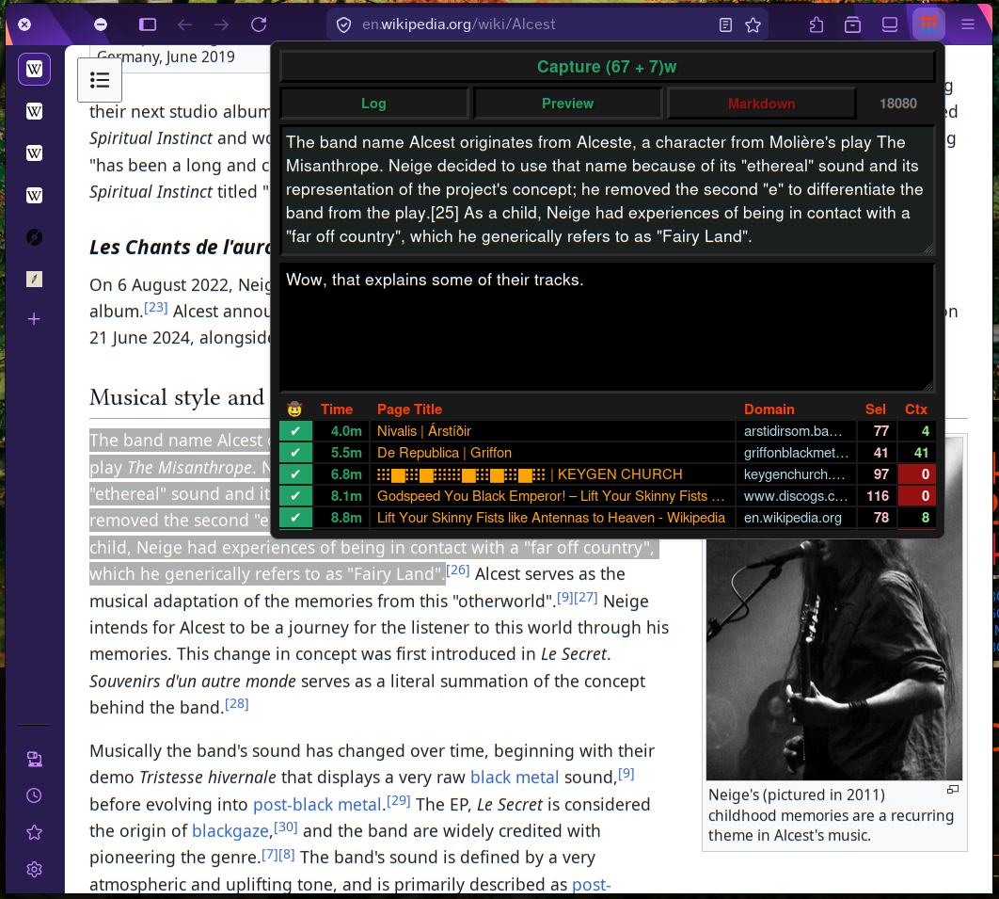
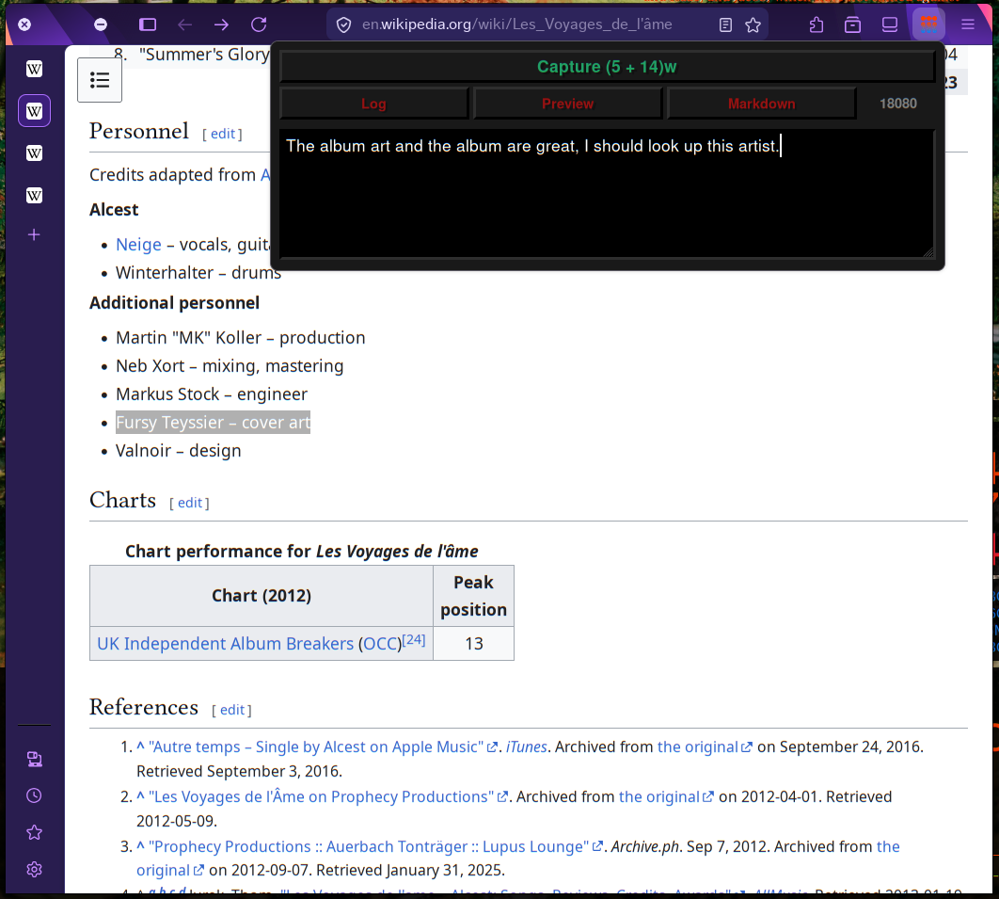
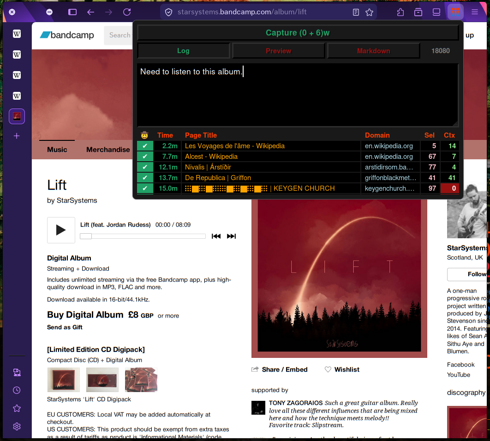

This is a Web Extension (for Firefox / Chrome / Chromium) that extracts the current page title, url and highlighted text and sends it to a local server. This allows the you to "capture" the content you highlight in a local file.
Ideal for note-taking and saving highlights to a personal file / exobrain.
It includes a (local-only) log of previous requests for your sanity. No more wondering "oh, did I capture that?" and having to open the capture file to check.



This extension has been accepted to the Firefox Add-Ons Store!!
To test this extension on firefox, follow these steps:
For Firefox: Use Nightly. Toggle xpinstall.signatures.required in about:config. Load manifest.json via about:debugging.
This extension has not yet been published to the Chrome Web Store. To use it, you need to follow these instructions:
For Chrome/Chromium/Brave: Open chrome://extensions/ and enable "Developer Mode". Click on the "Load unpacked" button and select the manifest.json file.
Keybinds can be customized.
Alt+Shift+A Quick Capture
Alt+Shift+Z Capture with Context
The extension POSTs the following JSON to (selected port)/api/capture, which the user should write a server against:
"source_url": "string",
"page_title": "string",
"selection_text": "string",
"selection_html": "string",
"context": "string",
"markdown": boolean,
"timestamp": "ISO8601"
For ease of use, a simple server written in golang is included in the repo (separate from the add-on). This server takes three arguments:
-o File to output to.
-p Port to listen on.
-f Output Format.
In lieu of complicated parsing, we use the syntax that os.Expand understands. Expand replaces ${var} or $var in the string based on the mapping function.
This extension collects zero data. It sends data to a local server of your choosing, only when you want it to. It can only access localhost and 127.0.0.1.
Permissions required: activeTab, scripting and storage.